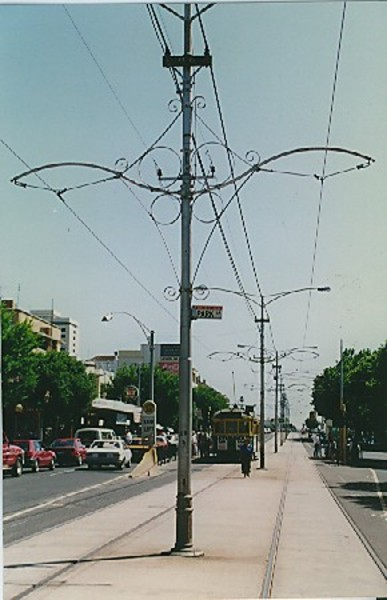
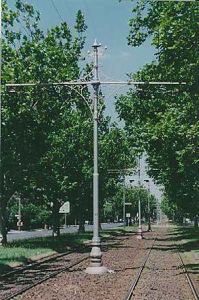
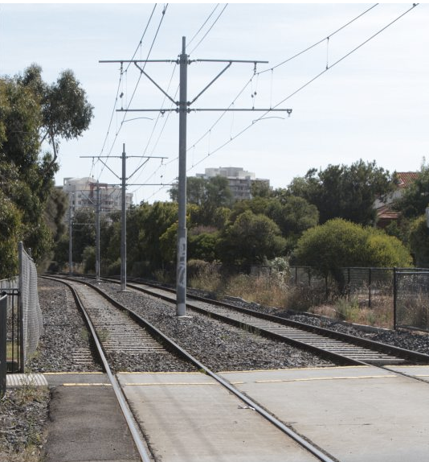

These types of tram-poles still exist at three Three Sites: Fitzroy Street, St. Kilda Peel Street, North Melbourne Victoria Parade, East Melbourne. [1. As explained on the Victorian Heritage Website "These three sets of poles are considered to be of State significance for their association with the early years of Melbourne's extensive and well-preserved electric tram system. They were erected at the same time that the famous W-Class tram was being developed and introduced, and particularly enhance lines where Ws run in everyday service. The tram poles were designed and erected by the Melbourne and Metropolitan Tramways Board in the 1920s as part of the electrification of the cable tram system and its unification with outer electric networks. They are also important streetscape elements in their own right. Their curvaceous design and curly trim recall another era of street furniture design. Melbourne's significant and characteristic tree-lined boulevards are also enhanced by their use, especially in Victoria Parade and Peel Street."]I was recently invited to a round-table by the Victorian Competition and Efficiency Commission - a kind of state equivalent of the PC. The topic? I was told it was 'Liveability'. An interesting subject about which I feel strongly - which is to say that without feeling I know a lot, I know what I like.I'm constantly coming across the odd detail of the landscape, a church, a beautiful bit of iron lacework on a terrace house or just the almost Parisian curves of the top of the poles that hold the tram wires in Fitzroy St Kilda and being aware of a thrill at seeing them. I also wonder why they're not elsewhere.
I recall about ten years ago they put up some light rail work near I was living. And the poles? Well, they were rudely utilitarian (See below). They weren't particularly ugly unless you're prissy about these things. But here was a chance to make things a bit nicer - like they had all those years ago in Fitzroy St.
Did the nicer designs cost more money? Probably. But hardly a lot more. And think of the pleasure they might have given the odd few - perhaps many more than the few and surely plenty of people who didn't take in the mechanics of why the view looked better than it otherwise might have. So I count them as a good public investment - indeed the marginal cost involved in the difference between a bunch of poles without any conscious design and the same poles with a bit of design nous put into them could easily turn out to have some of the best rates of return around. And whatever gift they are to the public keeps on giving. Year in, year out.

Tram poles in Dandenong Rd approaching St Kilda. [2. As explained on the Victorian Heritage Council website, "The ornamental tram poles in the median strip of Dandenong Road are the oldest and the most ornate of the remaining tram poles in Melbourne. Erected by the Prahran & Malvern Tramways Trust when their network was extended down Dandenong Road in 1911, they are also one of the major remnants of the many independent suburban electric systems that operated before the formation of the Melbourne & Metropolitan Tramways Board in 1922. The tram poles are also considered to enhance one of Melbourne's great tree-lined boulevards, which is further enhanced by W-Class Trams, contemporary tram shelters, and many early twentieth century houses and flats."]Which brings me to the fact that on reading the Issues Paper I discovered that the inquiry was actually about liveability in the context of 'competitiveness'. The relevant press release (pdf) says that "Maintaining our high position in world-wide liveability rankings is not only important for the people who live in Victoria, it also helps to attract innovative people who, in turn, attract high value industries." Well, I'd be happy for it all to be the other way round. I reckon living is priority number one and the extent to which 'competitiveness' helps you do it, and enjoy it then all the better for competitiveness.Anyway, all of those who think of competitiveness as a means to an end, as an input into liveability can thank Richard Florida's oddball theories for squaring the circle and selling liveability as an input into competitiveness. Competitiveness is serious stuff, so it's good that the hard heads are putting on their hard hats and wondering how to deliver liveability.
So how would you define liveability? Well the Issues Paper tells us how the Premier defines it.
It is a mix. It's about good economy, but more than that, it's about the sort of values that make up a society values like fairness, a fair go, traditional values, caring, strong communities. And it's about opportunity making sure wherever you come from, whatever your family background, you've got the opportunity to go on and do well in life.
So there you are. It's a fair way from what's at the top of those tram poles in St Kilda. Or the pleasure we get from parks, or from how easily and pleasantly and efficiently things work. Or of the advantages in minimising traffic congestion. It turns out it's about all those things that always come up in campaign speeches - a strong economy, communities, fair goes all round, caring, and that ladder of opportunity - are liveability. Perhaps that's a little unfair - the quote is from an interview in a newspaper article and I don't know the context. Perhaps he went onto say that liveability depends on the shape of those tram poles or I'm somehow missing his point.

Port Melbourne light rail poles. No heritage listing for these little critters.Anyway, the supporting research on VCEC's website makes it look like they're going to do a good job. But of course I'd always appreciate some input from Troppodillians as to what is liveability and how to optimise it for cities in general and for Melbourne in particular.
The fact that you know what you like does not add a great deal to the concept of 'livability'. Is it an efficient market equilibrium which matches people's preferences with government policies filling in public good gaps and correcting externalities?
I am also invited to the VCEC meetings but struggling a bit with the vagueness of their pursuit. It seems to be loosely concerned with how government can promote the general happiness - unhelpful.
One approach is to define livability in terms of the EIU or other livability rankings. Even if this is arbitrary I guess you win some good publicity if you top their poll.
One of the things that has contributed to nimby activism over the years is the fact that many developers and industries have not bothered to design in the sorts of positive visuals that were described in this article.
I often wonder if developers had taken a bit more care with livability, and local communities had a level of trust that developments would look and feel ok, that the costly and lengthy approval processes might be well shorter as a consequence.
ie, is it possible to actually quantify the benefits of livability in terms of lower likelihood of nimby delays?
(The classic example of this is where disguising telecom towers as trees or crucifixes enables placing of those towers quickly in places where otherwise there would be either no consent or a long drawn out appeal process).
I noticed in Spain and Italy, so often the most mundane and utilitarian objects were "designed", ie some thought had been put into their visual appeal. Exactly what you're talking about here.
The way the Issues Paper defines liveability is the way I would define a caring and efficient society. Liveability should encompass fairness, equality of opportunity, high employment and rising consumption standards but it is much more than that. The missing ingredient in the definition is quality of life. This needs a different set of goals and values - including a healthy natural environment, a liveable urban environment, adequate control of working hours, a dignified working environment, civil liberties, privacy etc. Going for growth enhances the capacity to achieve these things but a society can keep piling up affluence yet suffer a deteriorating quality of life.
Yes TWOP, France seems to me to be the height of this 'everything is designed' mentality. One of the things that makes Paris so glorious. Compare the Metro to the London Underground - though somehow I like the underground more (but that's just me being Anglophile).
I think you're on the right track Nicholas. Gazing upon beautifully designed objects, makes us feel a helluva lot better than the same gaze turned reluctantly towards the unsightly. Its pretty simple really.
But here I fear is the rub,
But enough to bring out the miser who doesn't give a toss about how other people feel compared to the lovely feeling of piling up the coins in his piggy bank.
Caroline, I'm increasingly optimistic that things are possible.
I would like to bring such concepts within the purview of the hitherto infuriatingly vague notion of 'corporate social responsibility'.
Firms spend a lot of money trying to impress in lots of ways. If you look at corporate headquarters they're trying to make a point and they are happy to sink cash into it. All sorts of emanations of CSR are like this - companies taking on a whole range of actions to reduce greenhouse emissions, improve worker safety and stuff like that. Some of it is 'no-regrets' in the sense that it improves their long term performance or at least doesn't degrade it. Some of it does perhaps have a marginal cost. But many many firms have taken to the idea that they have some corporate social responsibility as an aspect of their 'licence to operate'.
I think it's eminently practicable to ask them to try to pay real attention to the beauty of the things they make - at least where this can be done at the same cost as ugliness or at a very marginal additional cost. Sometimes no thought whatever is given to design and as a result the design can actually lower costs - by integrating decision making. I don't know about the beam in the picture at the right but I expect a bit of thought could make it look better without much if any cost. One might be able to save some metal, cost, resources and emissions by actually designing it properly. And while you did you'd ask someone to make it look good. I think one could multiply such examples ad nauseam. (Well that wasn't a good choice of Latin tag - but you get my driftus).
Curious, who paid for the "almost Parisian curves of the top of the poles that hold the tram wires in Fitzroy St Kilda"?
And what sort of labour conditions & pay were required to make it affordable?
I haven't seen Paris, but it is not just the major items that have visual appeal in that part of the world, everything from buildings to traffic cones seem to have been thought about.
I think Fred Argy has a very strong point. Where I live in Heidelberg is liveable - I can ride along a beautiful bike path next to the Yarra to work. We back onto a park with playground where I can take my 2 year old to have a swing. Within easy walking distance is a greengrocer with a cafe. There's a milk bar there too. There are plenty of kinders, a wonderful wonderful public library system (that's a plug for the Yarra Plenty Regional Library). Good public transport is useful - a very topical point in Melbourne. Good ethnic diversity adds to the spice - great neighbours and it's fun to go to Sydney Road.
Very ordinary, very suburban but important for everyday life (admittedly not too far from the city).
We visit the likes of St Kilda for an excursion - it's nice to have there but our 60s estate is rather liveable, if a lot more functional (and only a couple of McMansions in our street).
Nicholas I'm slowly pegging you for being one of those eternal optimists and you reckon its on the increase. Well hang on tight to that upwardly spiralling gyra mate. All power to you! (I am not (btw) being facaetious).
I once knew a girl in artschool. Her father was a scientist, her mother was an interior decorator. This odd looking creature seemed to be the synthesis of them both, very bright, very 'highly strung'. She wore particularly outrageous and expensive clothing. I found her crying in her studio one morning. What's wrong Felicity? Huh? She had just arrived in beautiful downtown Balmain, by train and bus from the leafy North Shore. "Everything is just so ugly" she sobbed. She was serious, she was really upset, she was a nut, but I could see where she was coming from.
Pessimism of the intellect; optimism of the will!
Get with the program Caroline! ;)
Nicholas
Important post! Well done!
I think key questions include:
(1) What are appropriate metrics and indicators of livability?
(2) How can these indicators include probable futures (so, livability in an enclosed space, measured by oxygen availability might be ok NOW, but without assurance of future adequate supply, that enclosed space cannot be considered livable)?
(3) How do you get agreement on the metrics that should be used to assess social achievements and policy?
Thinking about the "if you're not measuring it, you can't be managing it" rule applied to government (where I think "livability" is - or should be - the primary objective), it's hard not do be depressed.
Personally, I think if people understood the full scope of economics (management and allocation of resources), rather than focus on only a small part of it (money flows), we'd be better off. At the moment, most people's view of "economic management" within a state is about as useful as a CEO being totally focused on sales volume as a measure of success, without worrying about productive capacity and relevance of products into the future, i.e. long-term survivability of the company.
Hmmm - maybe "survivability" might be a better term to introduce as it seems to have a greater focus on the future than "livability".
A simple example of liveability is provided by the merchants of Footscray. Most of them use metal shutters to secure their shops overnight. But this leaves the most godawful blighted streetscape outside trading hours, dirty, graffitied and intimidating streets. Because the streets are so unwelcoming, only undesirables are found there, breaking windows and spraying graffiti. Nice vicious circle, but could you convince all of the traders to remove their shutters together, and to have some extended trading hours for cafes etc? Who'll go first, when a plate glass window costs many thousands?
Another example is roadside advertising. What a blight on the landscape in many countries. In Spain however, they used to have it but the government got rid of it, leaving only the black silhouette of the tio pepe bulls starkly on skylines.
I'm not convinced that banning roadside advertising is net beneficial.
For instance, I know of a struggling but very decent winery in the Gippsland area that is on the brink of going under because it can't attract enough bypassers - VicRoads basically told them they are not allowed to place an informational advertisement on their own property that would be visible from the highway. I saw the proposed design, and there was certainly nothing objectionable about it.
I don't disagree that much road-size advertising is ugly (and presumably a dangerous distraction from the important task of focussing on the road while driving), but surely there're better alternatives than banning it outright.
But your basic point about governments sometimes needing to step in to break a dead-lock caused by a situation where no individual business stands to gain by trying to improve the status quo remains.
I'd like to gaze onto a beautiful vista of free and accessible public transport, reducing greenhouse gas emissions, air pollution and traffic congestion.
Talk about liveability - there's your starting point. Labor's been in power in Victoria long enough to undo the worst excesses of Kennett. Poorly managed PPPs reduce liveability.
Liveability is like a satisfying drink. Determined by the tastebuds of the imbiber. I find Melbourne's overhead tram wires to be quaint, but old-worldly and frankly, unsightly. That said, I find nothing quite as satisfying as a sparse landscape with sweeping grass plains, tall trees and no sign of human habitation for square miles in any direction.
Liveability is what the individual decides it to be.
Note to self: here's a useful link on some of this stuff.
http://www.boston.com/bostonglobe/ideas/articles/2008/12/28/urban_playground/
Interesting article, and the related link to http://www.boston.com/bostonglobe/ideas/articles/2009/01/04/how_the_city_hurts_your_brain/?p1=Well_MostPop_Emailed5 is worth following too.
As a long term bollard fancier, I'd just like to put in a nomination for the elegant simplicity of the design used at the vieux port in Marseille. These devices demonstrate an harmonious combination of "almost Parisian curves" and "rudely utilitarian" stopping power in the form of a long row of one meter diameter, solid cast iron spheres, firmly anchored to a wide concrete apron by the side of the road.
One of the very few things on earth that can claim to have earned the respect of French motorists.
Agreed on that one. Have you tried the Nullabor? It has everything you ask for except the tall trees. Not many employment prospects unless you like pumping petrol or making truck-stop meals.
It would be more fair to measure "livability" of areas with approximately equal population density. For example, Balmain runs at maybe three times the population density of the Northern suburbs.
This is so ridiculous a description of most Spanish roads that I don't know if it is a joke or not. There never was advertising in the mountains fwiw!
I like you tram pole picture - would you mind me using a low res version in a heritage assessment of melbourne's tramways I am doing for Heritage victoria?
Gary Vines
Fine with me.